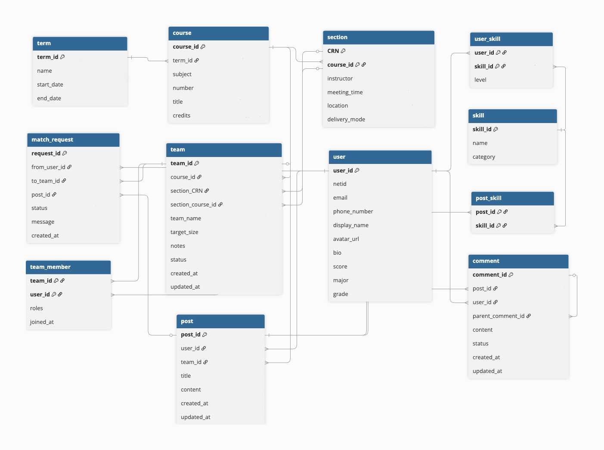

Cloud-Hosted Course Discovery and Team Matching Platform
Built a full-stack platform for course search, team formation, and profile management with transactional APIs, relational query optimization, and cloud-hosted MySQL deployment.
Overview
This project was designed as a full-stack platform for course discovery and team formation, targeting workflows such as finding classmates in the same course, filtering by availability or interest, and coordinating project-group formation through a structured web application rather than ad hoc messaging.
The backend was implemented with FastAPI and a normalized MySQL schema deployed on Google Cloud SQL. It handled authentication, user-profile management, transactional updates, and matching-related REST APIs. The data model and query layer were central to the project: significant effort went into designing relational schemas, implementing efficient joins and filtering logic, and supporting nontrivial matching queries across user profiles, courses, and availability constraints.

Beyond basic CRUD functionality, the system incorporated indexing, triggers, and stored procedures to improve performance and support database-driven logic for filtering and matching. A modular React frontend completed the end-to-end workflow, turning the project into a practical example of combining cloud-hosted databases, API design, and query-oriented system thinking in a usable team-formation product.